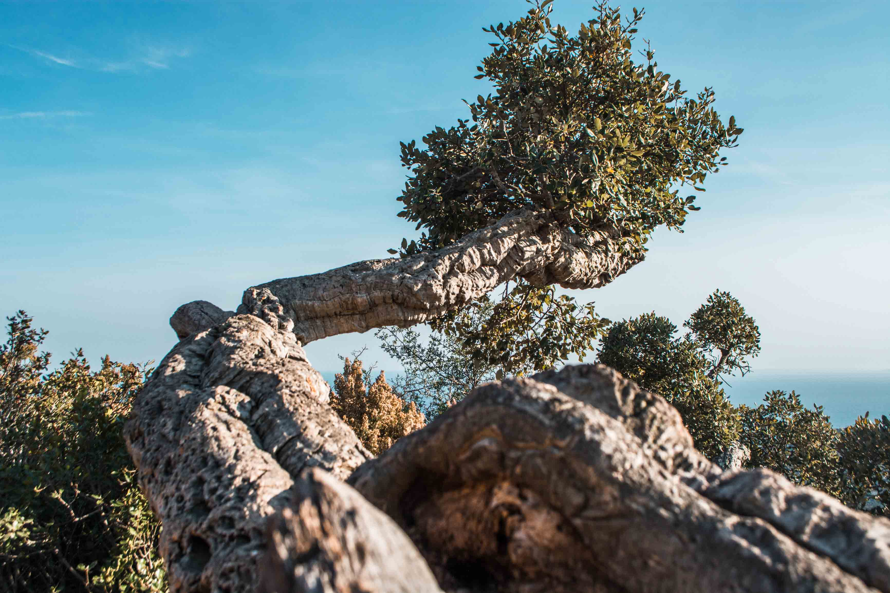
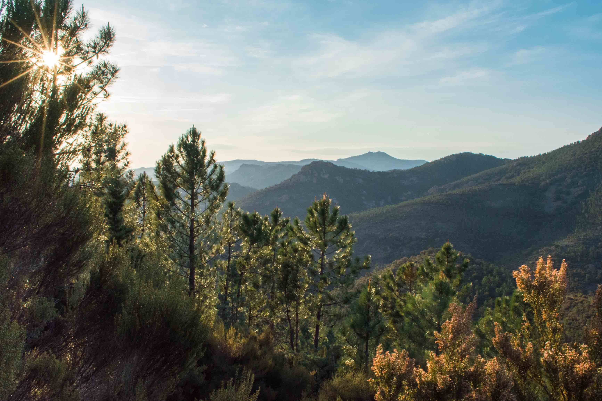
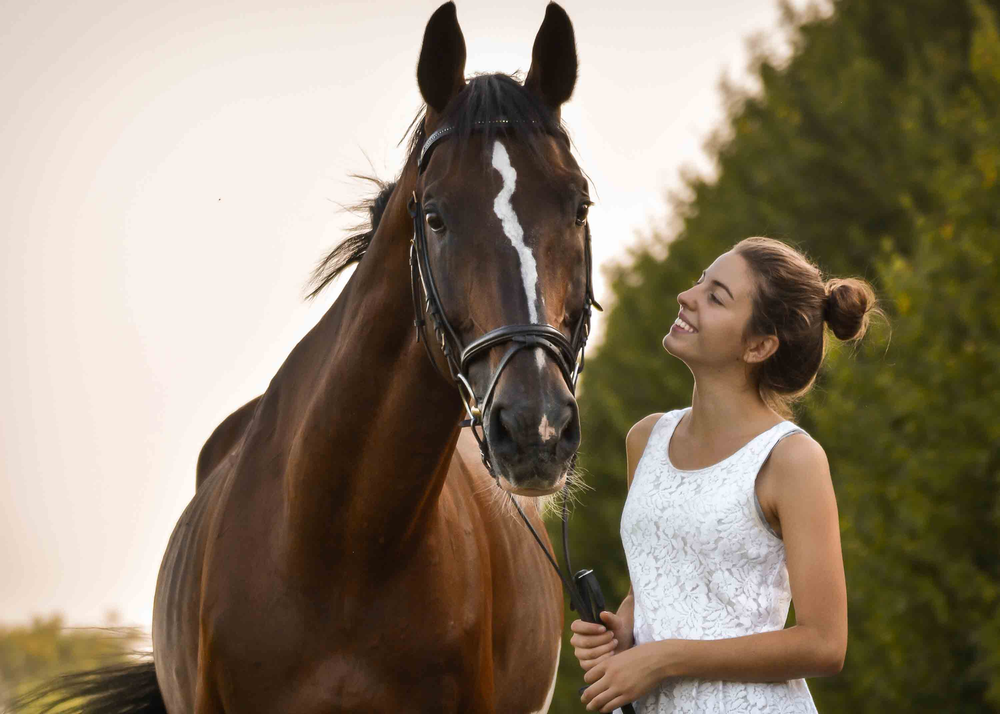
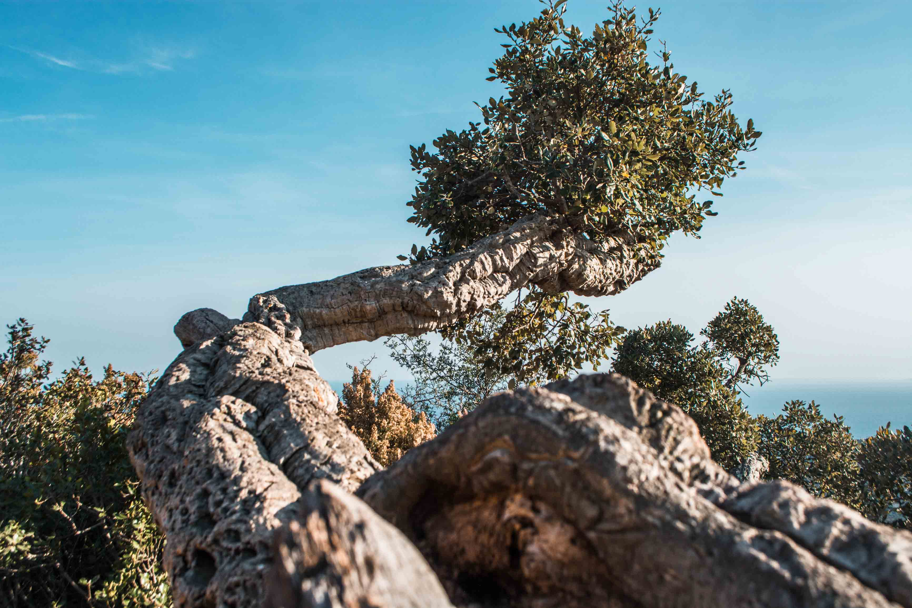
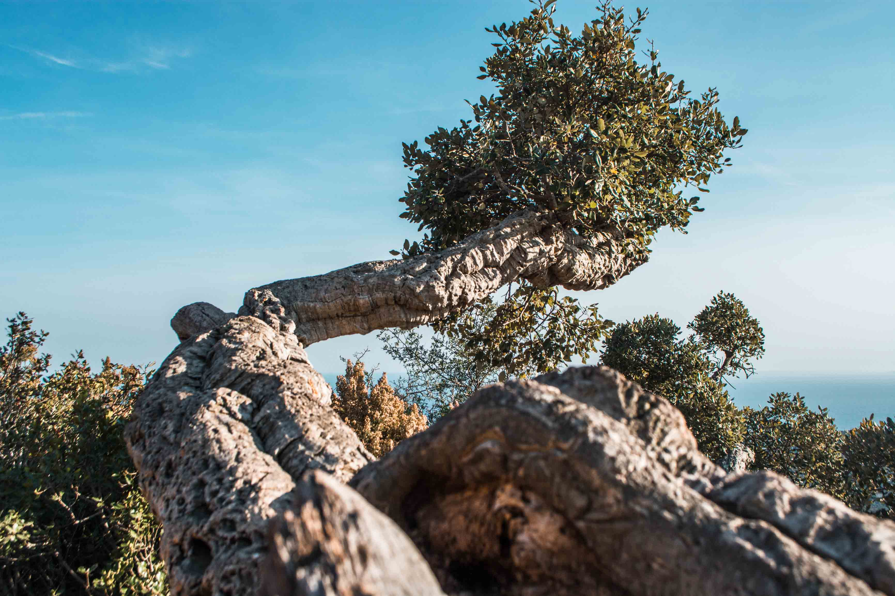
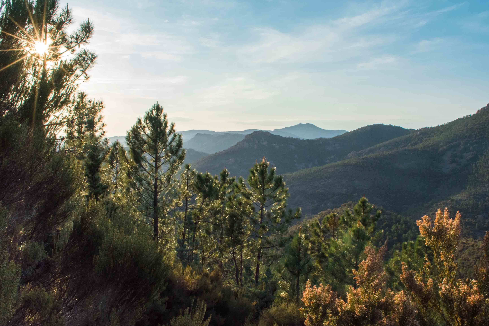
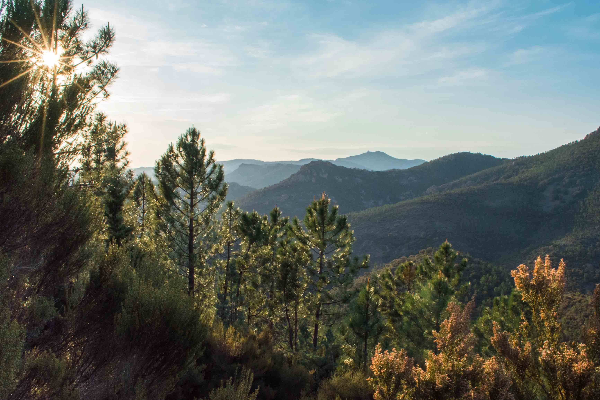
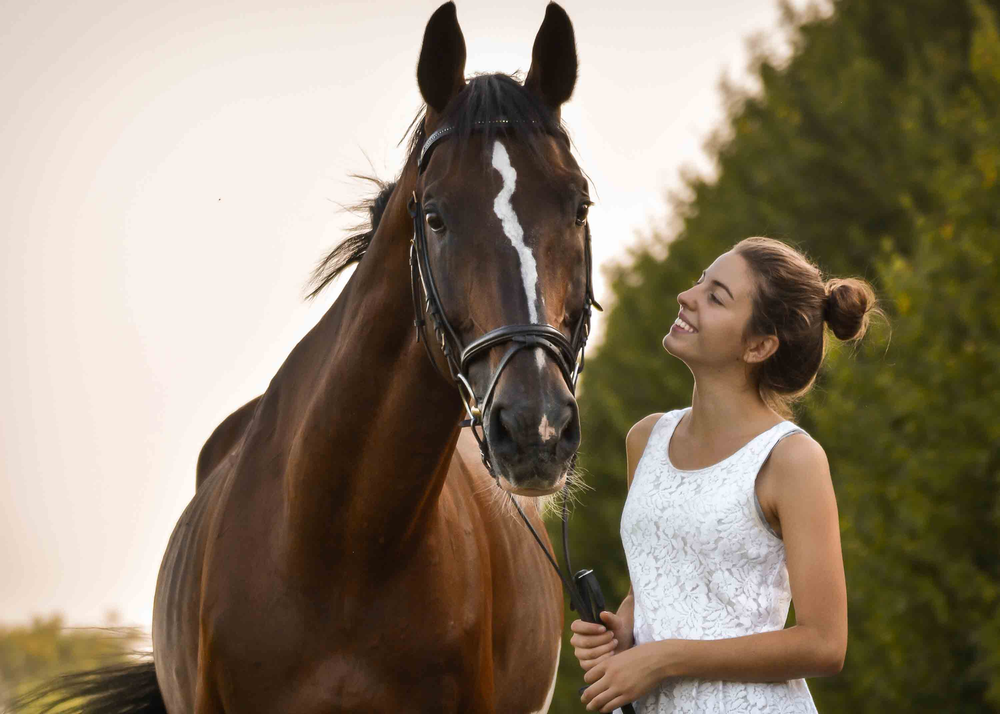
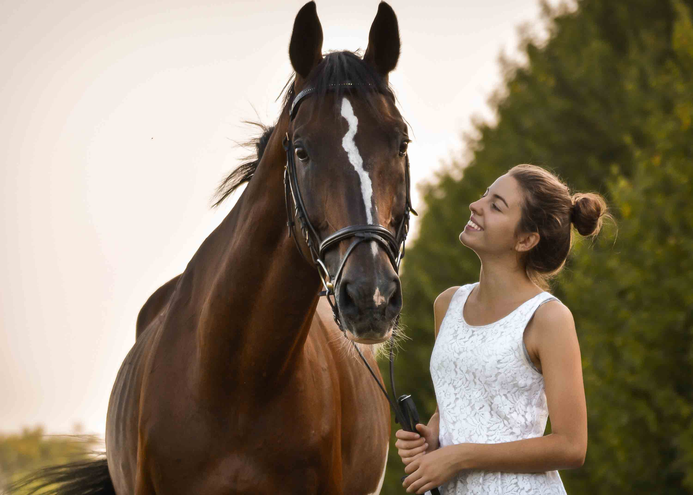

Meine Kamera und die Fotografie- und Filmaufnahmen, zu denen sie fähig ist,
sind meine Lieblingswerkzeuge. Ich liebe es, zu fotografieren, aber Fotografie
ist nicht meine Leidenschaft - die Natur ist es, inspirierende Menschen und
Begegnungen, ethisches Kochen und buntes Essen, Details, Ästhetik und Schönheit.
Ich liebe es, Geschichten zu erzählen, aber manchmal sagt ein Bild mehr, als
tausend Worte es je könnten.
Die Kamera ermöglicht mir, Momente festhalten, die genannten Dinge abzubilden und
mit anderen Menschen teilen zu können. Mein Motto ist: „Freude, Glück und Begeisterung gehören zu den Dingen, die sich vervielfachen,
wenn man sie teilt.“ Also tue ich das, wann ich kann.
Auf dieser Seite findest du einige meiner liebsten Arbeiten und am Ende noch
zwei Videos von unserer Weltreise.
Natural Beauty
Es gibt vieles, was Menschen auf Reisen begeistert, fasziniert, in den Bann zieht.
Für die einen sind es architektonische Meisterwerke, für andere Musikstile und Kunstwerke,
kulinarische Köstlichkeiten oder Unterschiede in der Kultur. Dinge, die man vielleicht
noch nie gesehen, gehört, geschmeckt oder erlebt hat. Wir lieben alle diese Dinge,
essen für unser Leben gerne in fremden Ländern, aber es gibt doch eines, was uns zu
begeistern vermag, wie nichts anderes: die überwältigenden Schauspiele, Wahrzeichen und
Phänomene der Natur.
Die Fotoreihe Natural Beauty ist mein Versuch, anderen Menschen einen Teil dieser
unendlichen Schönheit und Faszination vor Augen zu führen und unsere Begeisterung zu
teilen.


Beautiful Souls
Abgesehen von der Natur gibt es noch etwas, was mich sehr fasziniert: Menschen.
Nichts gibt dem Leben, einer Reise, einem Ort so viel Inhalt, wie die Begegnungen mit
interessanten, liebenswürdigen, inspirierenden Menschen. Begegnungen und Verbindungen
sind das, was uns am meisten berühren, inspirieren oder prägen kann.
Besondere Begegnungen oder Menschen in einem Augenblick für immer festzuhalten ist für
mich etwas ganz Besonderes. Daraus entstand die Fotoreihe Beautiful Souls.

Food For Future
Nachhaltigkeit und ein ethisches (Ess-)Verhalten sind Themen, die mir wichtig sind.
Auf meinem Blog teile ich unter anderem vegane Rezepte und Informationen zum Thema
Lebensmittelindustrie. Es liegt mir am Herzen, pflanzlich basiertes Essen so attraktiv
wie möglich zu präsentieren, um Menschen dafür zu begeistern. Food For Future ist eine Fotoreihe von einigen Rezepten, die ich im Laufe der Zeit für den Blog entwickelt
habe - mit 100% Plantpower und Liebe.
Chicama Sands
Drei Monate waren wir während unserer Weltreise in Peru. Das Land ist umwerfend schön
und hässlich zugleich, aber wir haben gelernt, überall Schönes zu entdecken.
In Chicama surften wir die längste Welle der Welt. Um an die abgelegene Welle zu
kommen, muss man lange am Strand und den Klippen entlanglaufen, wobei man so viele
faszinierend schöne Details entdecken kann. Die Fotoreihe Chicama Sands ist mein
erstes Kunstprojekt mit der Kamera, gewidmet der Schönheit, die in so vielen kleinen
Dingen in diesem wundervollen Land (und überhaupt überall in der Natur) steckt.
Saltwater Movement
Im Laufe der Weltreise habe ich angefangen, mich immer mehr für's Filmen zu interessieren,
weil man über Videos doch noch einmal Orte, Erlebnisse und Stimmungen anders festhalten
oder vermittlen kann. Unsere Weltreise-Dokumentationen (Vlogs)
findest du auf YouTube.
Hier zeige ich dir zwei Filme von Surftrips nach Medewi & Balian in Bali und
Huanchaco & Chicama - die längste Welle der Welt - in Peru.


 

 



 
